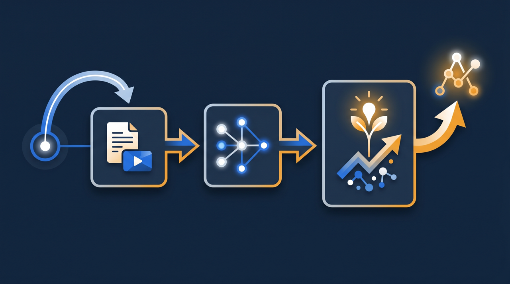

「とりあえず研修をやったけれど、何が変わったのか分からない」——こんな経験はありませんか。講師を呼んで、テキストを配って、半日かけて話を聞いてもらった。それなのに、現場の動きは前と変わらない。多くの場合、原因は研修の中身そのものより、「設計」の段階にあります。何を達成したいかを決めないまま内容を並べると、研修は受けて終わりになりがちです。この記事では、目的・対象・修了条件から逆算して研修を組み立てる、設計の進め方をテンプレートとともに整理します。
研修設計とは？「内容から」ではなく「目的から」
研修設計とは、「誰に、何ができるようになってほしいか」という目的から逆算して、研修の対象・内容・進め方・修了条件を組み立てていくことです。言葉にすると当たり前に聞こえますが、実際の現場では、ここが抜けていることが本当に多いんです。
よくあるのが、「内容から」考えてしまうパターンです。「ビジネスマナーの研修をやろう」「コンプライアンスの話をしてもらおう」と、扱うテーマから決めてしまう。一見、研修らしく見えます。けれど、ここで一度立ち止まって問いかけてみてほしいんです。その研修を受けた人は、終わったあとに何ができるようになっているのでしょうか?
この問いに具体的に答えられないなら、その研修は「目的」ではなく「テーマ」から組まれている可能性が高いんです。テーマは「何を扱うか」、目的は「何ができるようになるか」。似ているようで、出発点がまるで違います。研修設計の核心は、テーマを並べることではなく、達成したいゴールを先に決めて、そこから必要な要素を逆算することにあります。
たとえば、ある会社で「電話応対の研修」を企画したとします。テーマから入ると「電話のマナーについて1時間話す」で終わりがちです。けれど目的から入ると、「新人が、よくある問い合わせ5パターンに、先輩の助けなしで応対できる」というゴールが見えてくる。すると、扱うべき内容も、達成を測る方法も、自然と決まってきます。同じ電話応対の研修でも、設計の出発点が違うだけで、中身も結果も大きく変わってくるわけです。
ステップ1：目的を「行動」で言語化する
設計の最初の一歩は、目的をはっきりさせることです。ここがぶれると、後の全部がぶれます。そして目的を決めるときのコツは、「行動」で書くことなんです。
ありがちなのが、「○○について理解する」「○○の知識を身につける」という書き方です。けれど、「理解した」かどうかは、外から見えません。本人が分かったつもりでも、実際にできるとは限りませんよね。そこで、目的は「観察できる行動」で書くようにします。
- 「接客について理解する」→「来店客に、決められた手順で声かけ・案内ができる」
- 「安全意識を高める」→「作業前の安全確認を、チェック項目に沿って実施できる」
- 「商品知識を深める」→「主要3商品の特徴を、お客様の質問に答えられる」
- 「PCスキルを学ぶ」→「日報を、所定の様式で一人で作成・提出できる」
左側の「理解する」「高める」という書き方は、達成できたかどうかを測れません。一方、右側のように「○○ができる」と行動で書くと、その行動ができているかを見れば、達成を判断できます。この違いが、後の修了条件を決めるときに効いてくるんです。
行動で書くときに役立つのが、「研修の翌日、その人は何をしているか」を想像してみることです。電話応対の研修なら、「翌日、問い合わせの電話を一人で受けて、よくある質問に答えている」。この具体的な場面が浮かべば、目的は十分に行動化できています。逆に、場面が思い浮かばないなら、目的がまだ曖昧だというサインです。
ステップ2：対象を分けて、過不足をなくす
目的が決まったら、次は「誰に」の部分、つまり対象を考えます。ここで大事なのは、対象を一括りにしないことです。
同じ研修でも、新人とベテラン、職種が違う人では、必要な前提知識も、到達してほしいレベルも違います。対象を分けずに一律の研修を作ると、ある人には簡単すぎて退屈になり、別の人には難しすぎてついていけない。結果として、誰にとっても中途半端な研修になってしまうことがあるんです。
実際にあった話として、ある会社が全社員一律で情報セキュリティの研修を行ったところ、ベテランからは「毎年同じ初歩的な話で退屈」、新人からは「専門用語が多くて難しい」と、正反対の不満が出たそうです。同じ内容が、片方には易しすぎ、片方には難しすぎた。対象を分けていれば、避けられた事態かもしれません。
対象を分けるときは、次のような切り口で考えると整理しやすくなります。
| 切り口 | 分け方の例 | 設計で変わる点 |
|---|---|---|
| 経験 | 新人 / 中堅 / ベテラン | 前提知識の量・到達レベル |
| 職種・役割 | 現場スタッフ / 管理者 | 必要なスキルの種類 |
| 拠点・業態 | 本部 / 店舗、大型店 / 小型店 | 扱う事例・運用ルール |
| 受講の動機 | 必須 / 任意 | 案内の仕方・修了の扱い |
すべての切り口で細かく分ける必要はありません。その研修の目的にとって、最も差が出る切り口を1つか2つ選んで分ければ十分です。たとえば新人研修なら経験で分ける意味は薄く、職種で分けるほうが効くことが多い。目的に立ち返って、どの違いが結果を左右するかを見極めるのがコツです。
ステップ3：目的から内容を逆算する
目的と対象が決まると、扱うべき内容は、かなりの部分が自動的に決まってきます。ここでも「逆算」がポイントです。「教えたいこと」を並べるのではなく、「目的を達成するために必要なこと」だけを選ぶんです。
先ほどの電話応対の例で考えてみましょう。目的は「新人が、よくある問い合わせ5パターンに、一人で応対できる」でした。この目的から逆算すると、必要な内容が見えてきます。まず5パターンが何かを知ること。次に、それぞれの応対の流れを覚えること。そして、実際に声に出して練習すること。逆に、「電話の歴史」や「マナーの一般論」は、この目的には必要ありません。

この「逆算して削る」作業が、実は研修設計でいちばん効きます。多くの研修は、内容が盛りだくさんすぎて、肝心の目的がぼやけてしまっているんです。「せっかくだからあれも教えよう、これも入れよう」と足していくうちに、時間ばかりかかって、結局何ができるようになったのか分からなくなる。目的に直結しないものを思い切って外すと、研修は短く、鋭くなります。
そして内容を組むときには、「知る」と「できる」を分けて考えると整理しやすくなります。知識をインプットする部分と、実際にやってみる部分です。電話応対なら、「応対の流れを知る」のがインプット、「実際に声に出して練習する」のが実践です。知るだけでは、できるようにはなりません。目的が「できる」である以上、練習や実践の時間を設計に組み込んでおくことが欠かせないんですよね。
ステップ4：修了条件で「できた」を確認する
設計の仕上げが、修了条件です。これは「どうなったら、この研修を修了したと言えるか」を決めることです。ここが抜けると、研修は「受けたかどうか」しか分からなくなり、目的だったはずの「できるようになったか」を確認できません。
修了条件は、ステップ1で行動化した目的と、そのままつながります。目的を「○○ができる」と行動で書いてあれば、「その行動ができているか」をチェックすればいい。だから、目的をしっかり行動化しておくことが、ここで活きてくるわけです。
- 知識を問う部分 → 確認テストで、一定の正答率を合格基準にする
- 実技ができる部分 → チェック項目に沿って、実際の動作を確認する
- 応対や対応 → ロールプレイで、決められた流れを再現できるか見る
- 提出物がある部分 → 所定の様式で、一人で作成・提出できるか確認する
ここで気をつけたいのは、修了条件を「出席」だけにしないことです。「研修に参加したら修了」では、できるようになったかを問うていません。確認テストや実技チェックを修了条件に置くと、受講者も「見て終わり」ではなく「できるようになる」ことを意識して臨むようになります。修了条件は、研修の質を最後に担保する関所のような役割を持っているんです。
ある製造業では、安全教育の修了条件を「動画視聴のみ」から「視聴後の確認テストで8割以上」に変えたところ、受講者が動画を真剣に見るようになったといいます。修了条件を一段上げただけで、同じ研修の効果が変わった。修了条件は、単なる事務手続きではなく、学びの真剣さを左右する設計要素なのだと分かる例です。
設計した研修を、運用と記録で支える
ここまでの4ステップ——目的・対象・内容・修了条件——を踏むと、場当たりだった研修が、ゴールから逆算された設計に変わります。ただ、設計図ができても、それが現場で回り、記録として残らなければ、効果は確かめられません。
そこで効いてくるのが、設計した研修を学習管理システム(LMS)で運用することです。対象ごとに見せる教材を分け、確認テストを修了条件として設定し、誰がどこまで進んで、テストに合格したかを記録できる。設計のステップ2(対象を分ける)、ステップ4(修了条件で確認する)が、そのまま仕組みに落とし込めるわけです。
そして記録が残ると、研修そのものを良くしていけます。多くの人が同じ問題でつまずいているなら、その部分の教え方に課題があるのかもしれません。「設計して、運用して、記録を見て、設計を直す」。この循環が回り出すと、研修は一度作って終わりではなく、使うほどに目的に近づいていきます。
なお、こうした研修の運用や教材づくりには、人材開発支援助成金のように、訓練にかかった経費や賃金の一部を国が助成する制度を活用できる場合があります。こうした制度では、訓練計画や実施記録の整理が求められることが多く、目的・対象・修了条件まで設計された研修と、その受講記録が残っていると、手続きを進めやすくなる傾向があります。設計をきちんと行うことは、教育の効果だけでなく、制度活用の面でも下地になるわけです。
まとめ：ゴールから逆算すれば、研修は変わる
研修が「やって終わり」になってしまうのは、内容が悪いからとは限りません。多くの場合、「何ができるようになってほしいか」という目的を決めないまま、テーマや内容から組み立てていることが原因です。出発点が違うだけで、研修の結果は大きく変わってきます。
設計の流れは、目的・対象・内容・修了条件の4ステップです。まず目的を「○○ができる」と行動で言語化する。次に対象を分けて、内容の過不足をなくす。そして目的から内容を逆算し、直結しないものを削る。最後に修了条件で、「できた」を確認できるようにする。この順番で組み立てると、研修はゴールから逆算された、ぶれない設計になります。
ここで一つ、設計を進めるうえで覚えておきたいことがあります。それは、最初から完璧な設計を目指さなくてよい、ということです。目的を行動で書き、対象をざっくり分け、内容を逆算し、修了条件を仮に置く。まずはこの粗い設計で一度回してみて、受講者の反応や記録を見ながら直していく。設計図は、運用しながら精度を上げていくものだと考えると、着手のハードルが下がります。きれいな設計書を作ることが目的ではなく、現場で人が育つことが目的なのですから、動かしながら整えていく姿勢のほうが、結果として良い研修に近づいていく傾向があります。
設計した研修は、学習管理システムで運用し、受講と修了を記録に残すことで、効果を確かめ、改善し続けられます。まずは、いま手元にある研修を1つ取り上げ、「この研修を受けた人は、翌日に何ができているか」を行動で書き出してみてください。そこから逆算していくと、足すべきものと削るべきものが見えてきます。それが、場当たりの研修を抜け出す、最初の一歩になります。
よくある質問
「誰に、何ができるようになってほしいか」という目的から逆算して、研修の対象・内容・進め方・修了条件を組み立てていくことです。とりあえず内容を並べるのではなく、達成したいゴールを先に決め、そこから必要な要素を設計する考え方を指します。
最初に決めるのは目的、つまり「受講した人が、研修後に何をできるようになっているか」です。ここを行動レベルで具体的に言語化できると、教える内容も、達成を測る修了条件も、目的から自然に導きやすくなります。内容から先に決めると、目的とずれやすい傾向があります。
「○○について理解する」ではなく、「○○の手順を、一人で最後まで実行できる」のように、観察できる行動で書くのが目安です。行動で書けると、達成できたかどうかを修了条件として測りやすくなり、研修の効果も確認しやすくなります。
修了条件がないと、研修を「受けたかどうか」しか分からず、「できるようになったかどうか」が把握できないためです。確認テストの合格基準や、実技のチェック項目を修了条件として決めておくと、受けただけで終わる状態を防ぎやすくなります。
あります。新人とベテラン、職種が違う人では、必要な前提知識も到達してほしいレベルも異なるためです。対象を分けずに一律の研修にすると、ある人には簡単すぎ、別の人には難しすぎる、という状態が起きやすくなります。対象ごとに設計すると、内容を過不足なく合わせやすくなります。
訓練の内容や進め方によっては、人材開発支援助成金のように、訓練にかかった経費や賃金の一部を国が助成する制度を活用できる場合があります。対象になるかは訓練計画の内容や手続きの要件によって変わるため、詳細は厚生労働省の公式情報や窓口でご確認ください。